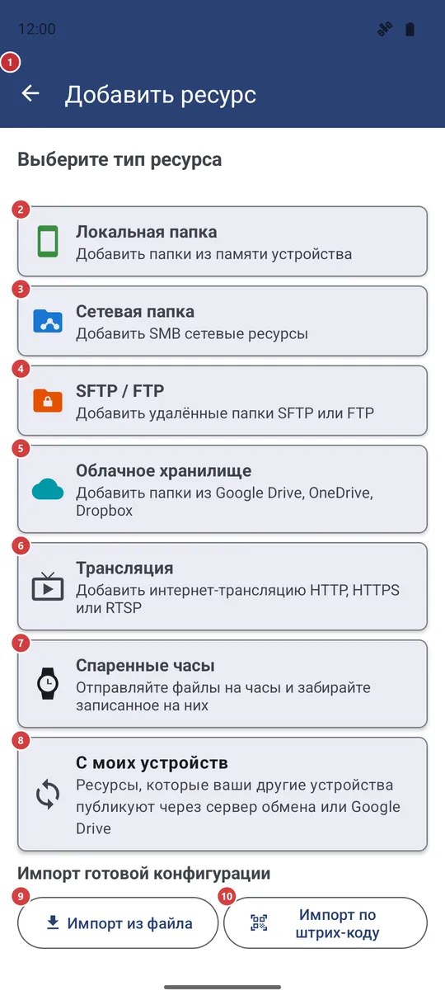
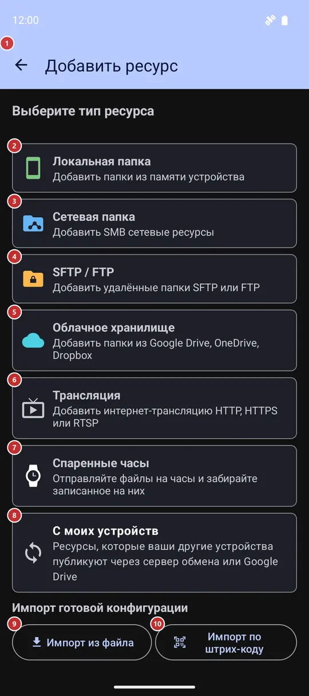

Добавить ресурс
Для чего этот экран
«Добавить ресурс» - экран, где вы подключаете к приложению новое место с файлами: папку на устройстве, сетевую папку, сервер SFTP или FTP, облачную папку, интернет-трансляцию или часы. Выберите тип, заполните короткую форму - и новый ресурс появится в списке в списке ресурсов.


Порядок действий
- Выберите, что добавить: «Локальная папка» 2 - папка на устройстве, «Сетевая папка» 3 - ресурс SMB, затем «SFTP / FTP» 4, «Облачное хранилище» 5, «Трансляция» 6, «Спаренные часы» 7 или «С моих устройств» 8. Типы, выключенные в настройках или отсутствующие в вашей редакции, не показываются, а если нажать «Добавить» в списке ресурсов при открытой вкладке типа, сразу откроется форма этого типа.
- Папка на устройстве: нажмите «СКАНИРОВАТЬ» 12, чтобы получить подсказки, или «Добавить вручную» 13, чтобы выбрать папку самому; отметьте нужное в списке 14 и нажмите «Добавить к ресурсам» 11.
- Сетевая папка: введите адрес сервера 17 или найдите его через «Сканировать сеть» 16. Укажите имя пользователя 18 и пароль 19, проверьте их кнопкой «Тест соединения» 20, выберите папку через «Сканировать хост» 21 или впишите её имя 22 и нажмите «Добавить этот ресурс» 27.
- SFTP или FTP: выберите протокол 29, введите хост 30 и данные для входа 31, проверьте кнопкой «Проверить соединение» 32, укажите путь на сервере 34 и нажмите «Добавить ресурс» 36.
- Облачное хранилище: нажмите на сервис 15, войдите в аккаунт, затем заходите в папки кнопкой «Внутрь» 45 и нажмите «Выбор» 46 у нужной папки.
- Есть готовая конфигурация от программы-компаньона для Windows? «Импорт из файла» 9 или «Импорт по штрих-коду» 10 избавят от ввода всех данных вручную.
- «Назад» 1 закрывает экран, ничего не добавляя из того, что ещё не сохранено.
Элементы
Что добавить
1НазадЗакрывает экран, не добавляя то, что вы ещё не сохранили.
И из списка типов, и из любой формы кнопка возвращает на экран, с которого вы пришли, - обычно на главный. Из формы к списку типов она не возвращает: чтобы выбрать другой тип, откройте «Добавить» заново. Введённое в форме, но не добавленное пропадёт.
- Сочетание клавиш
- Esc / F10
2Локальная папкаДобавляет папку или подборку медиа с этого устройства.
Открывает форму локальной папки: приложение может само найти папки с медиа, или вы выбираете любую папку сами, в том числе на карте памяти или USB-накопителе. Эта карточка есть всегда. Если все удалённые источники выключены или недоступны в вашей редакции, выбирать больше не из чего, и экран пропускает список типов и сразу открывает эту форму.
3Сетевая папкаДобавляет общую папку с компьютера или NAS по протоколу SMB.
Открывает форму SMB: адрес сервера, вход и имя общей папки. Карточка появляется, только если SMB есть в вашей редакции и включён в настройках, на вкладке «Общие», в разделе «Удалённые ресурсы (SMB/(S)FTP/Облако)».
4SFTP / FTPДобавляет папку на сервере SFTP или FTP.
Открывает форму SFTP / FTP: там выбирают протокол и входят по паролю или по SSH-ключу. Карточка видна, если SFTP или FTP есть в вашей редакции и включены в настройках, на вкладке «Общие», в разделе «Удалённые ресурсы». Две кнопки импорта повторяются в верхней части этой формы.
5Облачное хранилищеДобавляет папку из Google Диска, OneDrive или Dropbox.
Открывает список облачных сервисов. Облако есть не во всех редакциях, а карточка видна, только пока в настройках, на вкладке «Общие», в разделе «Удалённые ресурсы», включён хотя бы один облачный сервис.
6ТрансляцияДобавляет интернет-трансляцию по её адресу.
Вместо формы на этом экране открывается редактор ресурса для новой трансляции. Там вы задаёте название и адрес (http, https или rtsp), а при желании комментарий и ПИН-код. После сохранения трансляция появляется среди ресурсов, как и любой другой.
7Спаренные часыДобавляет ваши спаренные часы как ресурс.
У часов нет ни адреса, ни пароля, поэтому приложение спрашивает только название (предлагается «Часы»). Спаренные часы одни, и если они уже есть среди ресурсов, вы увидите сообщение вместо дубликата. Карточка есть только в редакциях, которые умеют работать с часами.
8С моих устройствПодключает ресурсы, которые публикуют ваши другие устройства.
Открывает список ресурсов, которыми ваши другие устройства делятся через сервер обмена или Google Диск. Отметьте нужные и нажмите «Подключить» либо «Подключить все», чтобы взять весь список. Карточка показывается вместе с карточкой SFTP / FTP: подключённые ресурсы работают как SFTP.
9Импорт из файлаСоздаёт ресурсы из файла конфигурации, подготовленного на компьютере.
Выберите файл конфигурации, который сохранила программа-компаньон для Windows. Приложение прочитает его, добавит новые ресурсы, обновит уже существующие, сообщит, сколько изменилось, и закроет этот экран. Если в файле нет пароля, сначала появится окно с названием сервера и запросом пароля. Повреждённый файл или файл от более новой версии отклоняется с сообщением.
10Импорт по штрих-кодуСоздаёт ресурсы по QR-коду, который показывает программа на компьютере.
Открывает камеру для сканирования кода и затем импортирует всё так же, как из файла. Код сопряжения со встроенного SFTP-сервера другого телефона тоже подойдёт: он заполнит форму SFTP / FTP, а вам останется проверить данные и сохранить. На устройствах без камеры, включая VR-гарнитуры, кнопки нет - используйте кнопку «Импорт из файла».
11Добавить к ресурсамСохраняет папки, отмеченные в локальном списке.
Кнопка появляется, только когда в форме локальной папки есть что добавлять. Она добавляет каждую отмеченную строку как ресурс, сообщает, сколько добавлено, и закрывает экран. Если ничего не отмечено, вы получите напоминание выбрать хотя бы один ресурс. Если список быстрой сортировки заполнен, ресурсы всё равно добавятся, но лишние окажутся без отметки быстрой сортировки, и в сообщении будет указано, сколько их.
Локальная папка и облако
12СКАНИРОВАТЬИщет на устройстве папки с медиа.
Составляет список подсказок: стандартные папки, папки с медиафайлами и подборки вроде «Недавние медиа» или «Вся музыка». Уже добавленные папки и подборки в список не попадают. Пока ничего не сохраняется - отметьте нужное в списке ниже и нажмите «Добавить к ресурсам».
13Добавить вручнуюВыбирает папку или подборку вручную.
Открывает окно «Выбрать папку». Кнопки раздела «Виртуальные ресурсы» («Недавние медиа», «Вся музыка», «Всё видео», «Фото с камеры», «Все изображения», «Все документы») сразу добавляют подборку и закрывают этот экран. «Быстрый выбор стандартных папок» предлагает корень памяти, DCIM, Pictures, Download, «Документы» и папки WhatsApp, Telegram и Instagram; «Съёмные носители» показывает подключённые карты и накопители; остальное покрывают поле для пути (только там, где приложению разрешено читать пути) и системный выбор папки. Выбранная папка попадает в список ниже уже с галочкой.
Если Android сначала требует «Доступ ко всем файлам», окно объяснит это и предложит предоставить доступ или продолжить с ограничениями.
14Ресурсы для добавления:Найденные или выбранные папки - отметьте нужные и добавьте.
В каждой строке есть флажок, название, которое можно изменить, путь, число файлов и по одной букве на каждый тип медиа - нажмите на букву, чтобы включить или выключить этот тип. Ниже - «Быстрая сортировка», «Только чтение», «С подпапками» и «Все файлы». Папку, в которую нельзя записывать, нельзя отметить для быстрой сортировки. Пока не пришла первая папка, список скрыт.
15Выберите облачный сервисВходит в Google Диск, OneDrive или Dropbox и даёт выбрать папку.
На каждой карточке написано «Не подключено» либо «Подключено как» и аккаунт. Нажмите на сервис: если вы уже входили, выберите аккаунт или «Добавить новый аккаунт», иначе вход начнётся сразу. После успешного входа откроется выбор папки (см. последнюю группу на этой странице).
Форма сетевой папки (SMB)
16Сканировать сетьНаходит в локальной сети компьютеры с общими папками.
Открывает окно «Обнаружение сети» и сканирует вашу локальную сеть. Выберите компьютер в списке: его адрес попадёт в поле «IP сервера», а приложение покажет его общие папки. На некоторых версиях Android сначала запрашивается разрешение на доступ к устройствам в локальной сети.
17IP сервераАдрес компьютера или NAS, который раздаёт папку.
Введите IP-адрес. Поле начинается с первых трёх чисел адреса самого телефона, так что обычно остаётся дописать последнее. Пустой или неверный адрес останавливает «Тест соединения» и «Сканировать хост» с сообщением.
18Имя пользователяУчётная запись, которой разрешено открывать папку.
Введите имя учётной записи на сервере. Домен Windows, если он используется, указывается в разделе «Дополнительные параметры».
19ПарольПароль этой учётной записи.
Он сохраняется вместе с ресурсом, чтобы приложение потом подключалось само. Пока эта форма открыта, экран может скрываться от снимков экрана и списка недавних приложений - это зависит от настройки «Защищать секретные экраны».
20Тест соединенияПроверяет адрес и вход, прежде чем вы сохраните ресурс.
Подключается с тем, что вы ввели, и показывает в окне «Тест соединения - Успешно» или «Тест соединения - Ошибка». Ничего не сохраняется.
23Название ресурсаКак ресурс называется в вашем списке.
Если оставить поле пустым, приложение возьмёт имя общей папки. Позже ресурс можно переименовать в его редакторе.
24Условия сканирования содержимогоОпределяет, какие файлы общей папки учитывает приложение.
Сворачиваемый раздел с пятью параметрами. «С подпапками» ищет медиа во всех вложенных папках. «Все файлы» показывает файлы любых типов, а не только медиа. «Показывать подпапки отдельно» выводит подпапки как элементы, в которые заходят нажатием. «Отключить миниатюры» показывает значки расширений вместо превью. «Запоминать список файлов для этого ресурса» хранит копию списка на устройстве, чтобы он открывался быстрее.
25Типы медиаВыбирает, какие виды файлов показывает ресурс.
Отметьте «Изображения», «Видео», «Аудио», GIFs, «Текст», PDF, EPUB и DOC - в списке есть только типы, включённые в настройках и доступные в вашей редакции. Кнопка сверху, сначала «Пользовательский», открывает «Профиль ресурса» с готовыми наборами: «Аудиотека», «Видеотека», «Фотохранилище», «Документы» и «Файловый менеджер». «Все файлы» в разделе выше отмечает все типы и блокирует флажки.
26Дополнительные параметрыНеобязательное: быстрая сортировка, только чтение, комментарий, ПИН-код, домен и порт.
«Быстрая сортировка» делает папку местом назначения для сортировки. «Только чтение» запрещает в ней копирование, перемещение и удаление и выключает быструю сортировку. «Комментарий» - заметка для себя, а «ПИН-код (необязательно)» защищает ресурс 4-6 цифрами. «Домен (необязательно)» нужен для доменных учётных записей Windows, а «Порт» - 445, если ваш сервер не слушает другой.
27Добавить этот ресурсСохраняет общую папку как ресурс.
Сохраняет данные для входа, добавляет ресурс, показывает сообщение и закрывает этот экран. Если до папки сразу не удалось достучаться, вы узнаете об этом, но ресурс всё равно добавится - проверьте имя папки и доступ и поправьте их в редакторе.
Форма SFTP / FTP
28Как опубликовать папки ПК для AndroidОткрывает руководство по публикации папок ПК для приложения.
Ссылка находится в верхней части формы рядом с двумя кнопками импорта и открывает в браузере руководство по настройке программы-компаньона. Пригодится, если вы ещё не опубликовали папки на ПК и импортировать нечего.
29Выбор протокола:Выбирает SFTP (защищённый, через SSH) или обычный FTP.
SFTP использует порт 22, FTP - порт 21; поле порта меняется вслед за выбором, если вы не вводили другой номер. FTP не шифруется, поэтому по возможности выбирайте SFTP. Блок «Проверка сервера» ниже относится только к SFTP и для FTP скрыт.
30ХостИмя или IP-адрес сервера и его порт.
Введите имя хоста или адрес. Порт подставляется сам (22 для SFTP, 21 для FTP); меняйте его, только если сервер слушает другой. Пустой или неверный хост отклоняется с сообщением.
31Способ входаВход по паролю или по SSH-ключу.
«Пароль» запрашивает имя пользователя и пароль. «SSH ключ» запрашивает имя пользователя и приватный ключ - вставьте текст ключа или нажмите «Загрузить», чтобы прочитать его из файла, - а также парольную фразу, если она у ключа есть. SSH-ключи работают только с SFTP; для FTP всегда нужен пароль.
32Проверить соединениеПроверяет адрес и вход, прежде чем вы сохраните ресурс.
Подключается с тем, что вы ввели, и сообщает в окне, получилось ли. Если сервер показал свой ключ, а поле проверки ещё пусто, окно предложит «Закрепить ключ» - он сам попадёт в «Проверку сервера».
33Проверка сервера (опционально)Привязывает соединение к одному настоящему серверу.
Вставьте отпечаток ключа сервера в формате SHA256, и приложение откажется работать с любой другой машиной, отвечающей по этому адресу. Так вы защищены от подмены сервера. Это необязательно и относится только к SFTP; проще всего нажать «Проверить соединение», а затем «Закрепить ключ».
34Удаленный путьПапка на сервере, которая станет ресурсом.
Например, /home/user/media или /, если нужно всё, что видит учётная запись. Сразу под ним поле «Название ресурса» - подпись в вашем списке; если оставить его пустым, приложение придумает название само.
35Сканирование, типы медиа и дополнительные параметрыТри сворачиваемых раздела, которые работают так же, как в форме сетевой папки.
«Условия сканирования содержимого», «Типы медиа» и «Дополнительные параметры» содержат те же варианты, что и для папки SMB: подпапки, «Все файлы», миниатюры, типы медиа с кнопкой профиля, «Быстрая сортировка», «Только чтение», комментарий и ПИН-код. Открывайте их, только если настройки по умолчанию вам не подходят.
36Добавить ресурсСохраняет папку на сервере как ресурс.
Нужны хост и хотя бы один тип медиа, иначе сообщение подскажет, чего не хватает. После сохранения экран закрывается. Если до сервера сразу не удалось достучаться, ресурс всё равно добавится, а сообщение скажет, что он пока недоступен, - данные можно поправить позже в редакторе.
Окно «Обнаружение сети»
37Ход поискаПоказывает, как далеко продвинулся поиск.
Пока идёт поиск, строка показывает проверяемую часть сети и счётчик. Когда поиск закончен, появляется «Сканирование завершено».
38Найденные устройстваСписок устройств в сети, которые раздают файлы.
В каждой строке - имя устройства, его адрес и службы, которые оно предлагает: SMB, FTP или SFTP. Нажмите на строку, чтобы выбрать устройство: его адрес попадёт в поле «IP сервера», окно закроется, а приложение покажет общие папки. Если ничего не найдено, появится надпись «Устройства пока не найдены»; убедитесь, что вы в той же сети Wi-Fi, и нажмите «Сканировать снова».
39СтопОстанавливает поиск или запускает его снова.
Пока поиск идёт, кнопка называется «Стоп» и прекращает его, не закрывая окно. Когда поиск завершён или остановлен, она называется «Сканировать снова» и запускает поиск заново.
40ОтменаЗакрывает окно, не выбирая устройство.
Незавершённый поиск при этом тоже останавливается.
Выбор облачной папки (Google Диск, OneDrive, Dropbox)
41Потянуть вниз, чтобы обновитьЗаново загружает папки текущего уровня.
Потяните список вниз, чтобы загрузить его снова, например после того, как вы создали папку в облаке. С клавиатуры то же делает сочетание клавиш.
- Сочетание клавиш
- Ctrl + Shift + R / Ctrl + F5
42Добавить в назначенияЗаодно отмечает выбранную папку для быстрой сортировки.
Если флажок стоит, выбранная папка станет не только ресурсом, но и местом назначения для быстрой сортировки. Отметьте его до нажатия «Выбор»; сначала он снят.
43С подпапкамиВключает всё, что лежит внутри выбранной папки.
Если флажок стоит (сначала он стоит), медиа ищутся во всех папках, вложенных в выбранную. Снимите его, чтобы смотреть только верхний уровень.
44Список папокПапки вашего облачного хранилища, по одному уровню.
На панели сверху - путь, где вы находитесь. Нажмите на строку, чтобы зайти в папку; у каждой строки есть и свои кнопки «Внутрь» и «Выбор», а ниже верхнего уровня - «Назад». Если на уровне нет папок, об этом сообщит надпись.
- Сочетание клавиш
- Enter
45ВнутрьОткрывает папку, чтобы показать папки внутри неё.
Делает то же, что нажатие на строку. Спускайтесь с её помощью к нужной папке, прежде чем нажать «Выбор».
46ВыборДобавляет эту папку в ваши ресурсы.
Создаёт облачный ресурс из папки с учётом ваших флажков «Добавить в назначения» и «С подпапками» и типов медиа, включённых в настройках. Вы увидите «Ресурс добавлен» и окажетесь в списке ресурсов. Папку, которую вы уже добавляли, приложение отклонит с пояснением.
- Отмена
- В облаке ничего не меняется. Чтобы отменить, удалите ресурс в списке ресурсов - папка останется на месте.
47НазадПоднимается на один уровень выше.
Кнопка есть у строк ниже верхнего уровня. Стрелка на панели и кнопка «Назад» на устройстве делают то же, а с верхнего уровня закрывают выбор папки. Esc тоже закрывает его.
- Сочетание клавиш
- Backspace